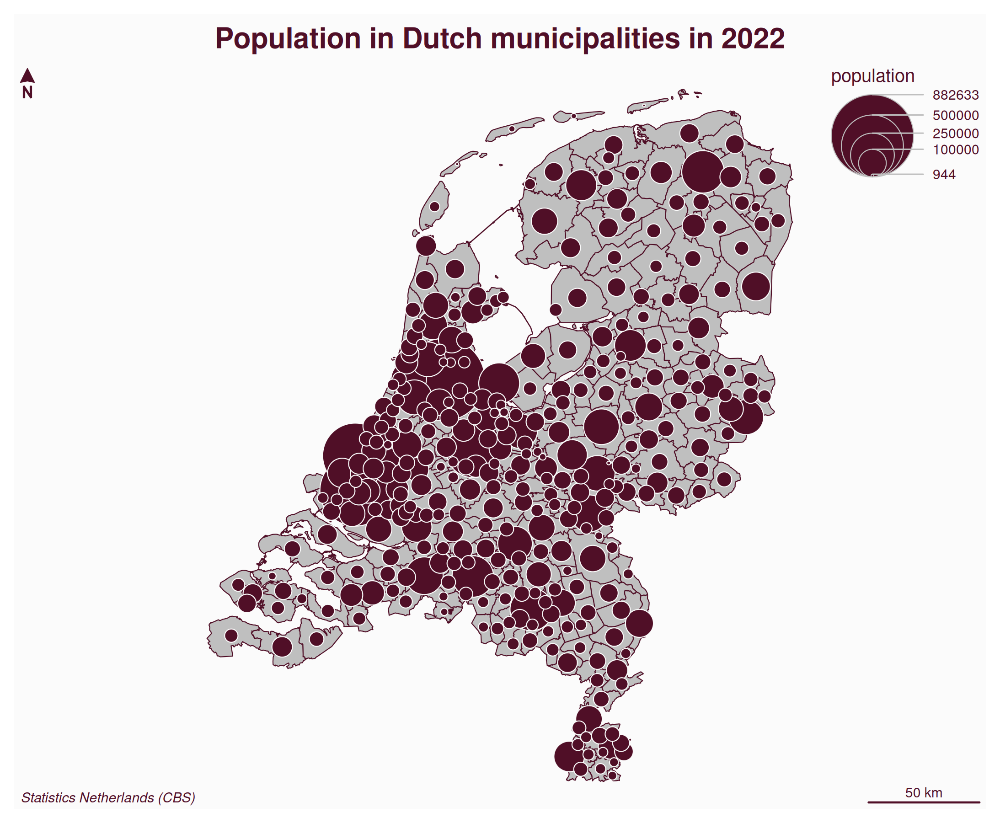
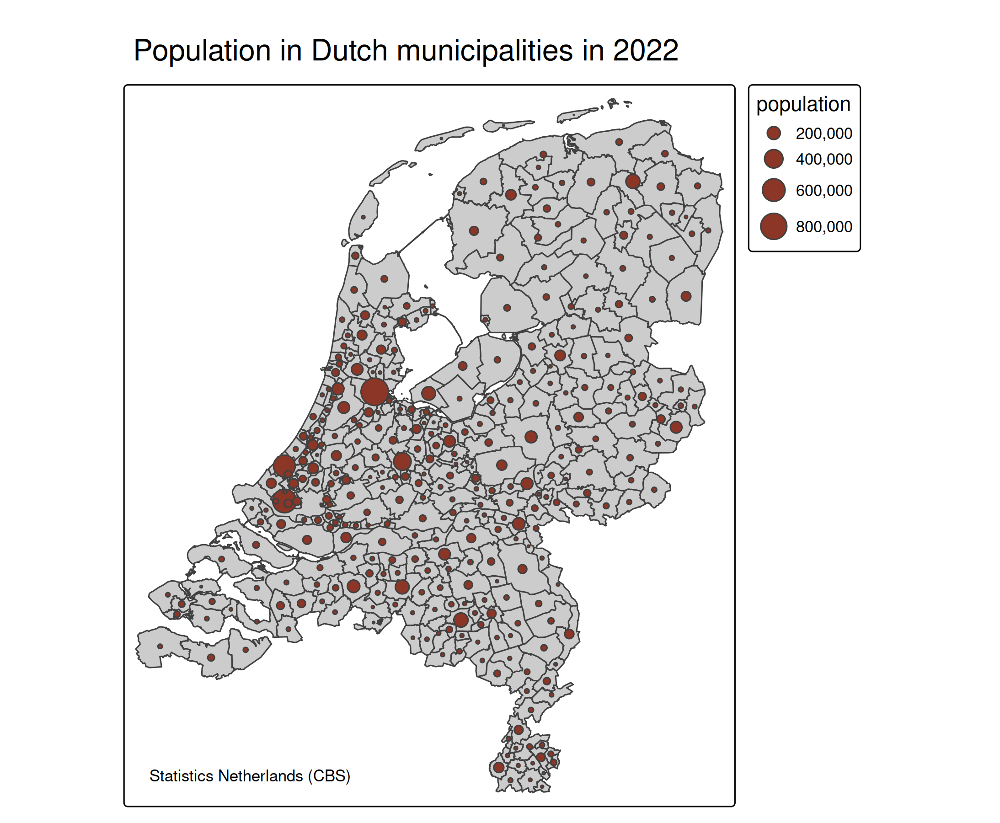
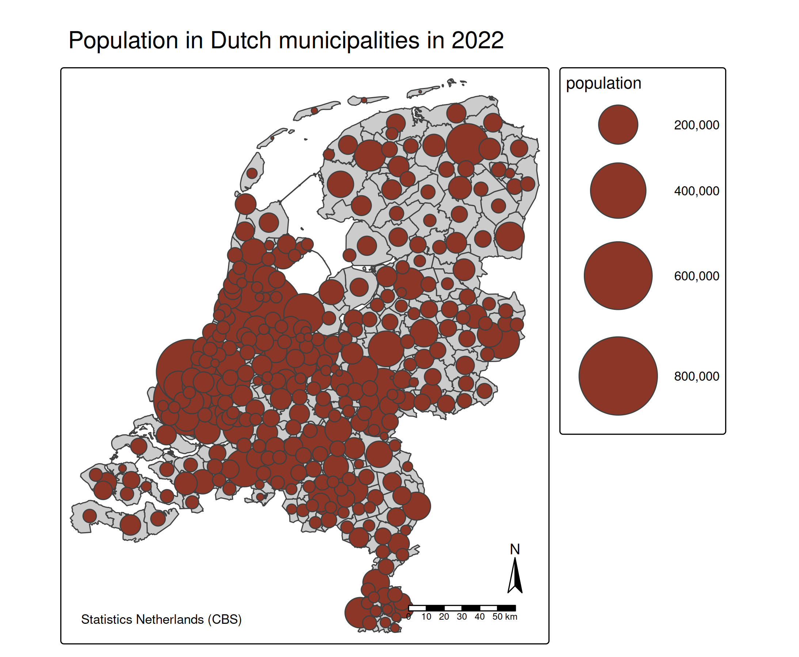
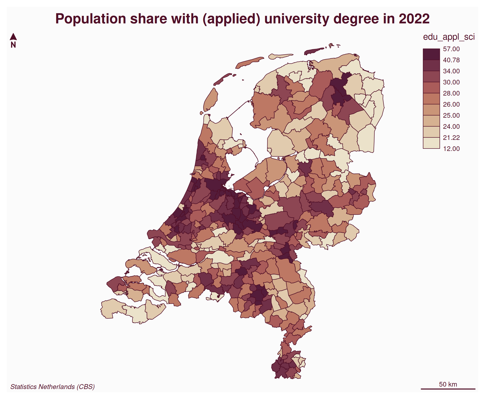
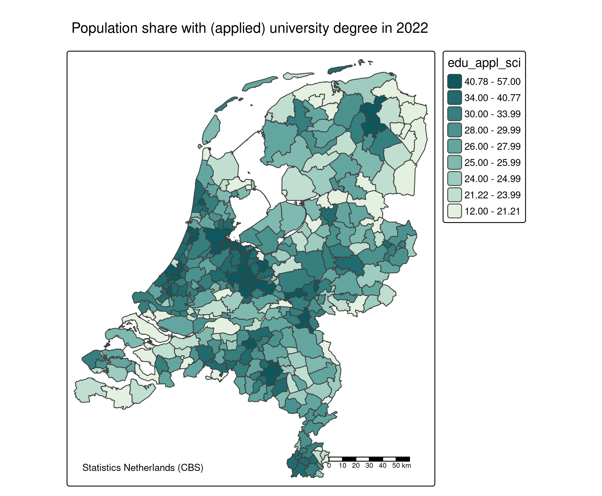
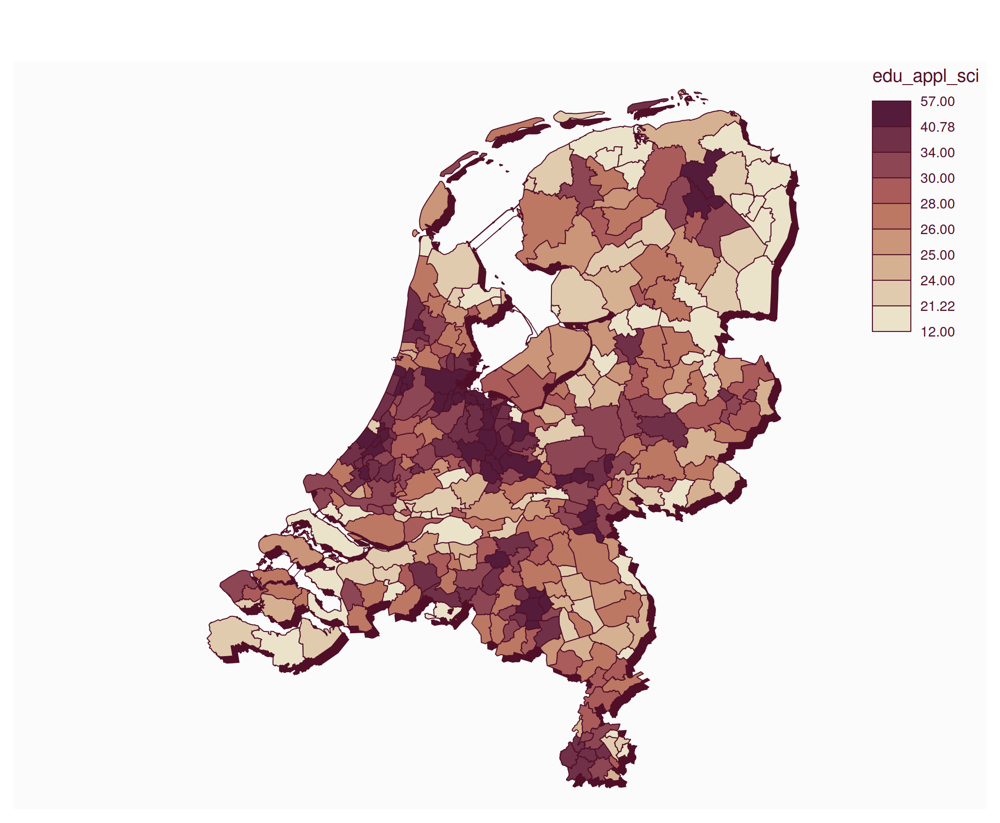
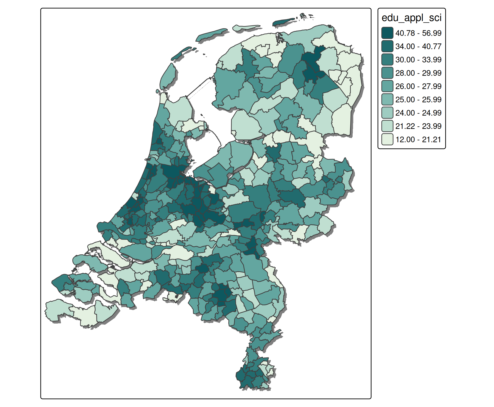

mapsf
The R package mapsf is an excellent package for static thematic maps. It is similar to tmaps “plot” mode.
Map layers
mapsf also offers different map layers, but in contrast to tmap where these are generated by different functions (e.g. [tm_polygons()] and [tm_symbols()]), mapsf uses one function mf_map, where the map layer type is specified via the argument type.
Components
Map components, such as a title, compass, scale bar, and credits text, can be added with both packages. In mapsf these are mf_title, mf_arrow, mf_scale, and mf_credits respectively.
Different legends
The legends of mapsf and tmap are different:
- In
tmapproportional symbols are always drawn next to each other whereas inmapsfthey are drawn on top of each other. Also the the color legend for class intervals is different. Both are shown below.
Shadow layer
mapsf has an awesome layer type that tmap does not have (yet): mf_shadow, which draws a shadow under polygons. See last example below
Inset (‘mini’) map
In mapsf a inset map can be added via mf_inset_on. In tmap, inset maps can be added via the argument vp in the print function.
A special and very handy use case is mf_inset_on(x = "worldmap") where a globe is plotted with a red arrow that should the location of the main map. In tmap this feature is still only available via “view” mode with the function tm_minimap.
Styling and themes
Both packages offer styling options and themes. In both packages own styles can be created. However, tmap has much more styling options available. See mf_theme() and [tm_layout()].
Bubble map
An example of mapsf applied to the tmap dataset [NLD_muni].
library(mapsf)
mf_map(NLD_muni)
mf_map(NLD_muni, var = "population", type = "prop", leg_pos = "topright", add = TRUE)
mf_layout(
title = "Population in Dutch municipalities in 2022",
credits = "Statistics Netherlands (CBS)")
In tmap (using the same colors):
tm_shape(NLD_muni) +
tm_polygons( "gray80") +
tm_bubbles(fill = "tomato4", size = "population") +
tm_title("Population in Dutch municipalities in 2022") +
tm_credits("Statistics Netherlands (CBS)", position = c("left", "bottom"))
Increase the overall size of the bubbles:
tm_shape(NLD_muni) +
tm_polygons( "gray80") +
tm_bubbles(
fill = "tomato4",
size = "population",
size.scale = tm_scale(values.scale = 5)) +
tm_title("Population in Dutch municipalities in 2022") +
tm_credits("Statistics Netherlands (CBS)", position = c("left", "bottom")) +
tm_compass() +
tm_scalebar()
Choropleth
mf_map(NLD_muni, var = "edu_appl_sci", type = "choro", leg_pos = "topright")
mf_layout(
title = "Population share with (applied) university degree in 2022",
credits = "Statistics Netherlands (CBS)")
In tmap, using similar specifications:
tm_shape(NLD_muni) +
tm_polygons(
fill = "edu_appl_sci",
fill.scale = tm_scale_intervals(values = "carto.mint", style = "quantile", n = 9),
fill.legend = tm_legend(reverse = TRUE)) +
tm_title("Population share with (applied) university degree in 2022") +
tm_credits("Statistics Netherlands (CBS)", position = c("left", "bottom")) +
tm_scalebar()
#> [plot mode] fit legend/component: Some legend items or map compoments do not
#> fit well, and are therefore rescaled.
#> ℹ Set the tmap option `component.autoscale = FALSE` to disable rescaling.
Shadow layer
mf_shadow(NLD_muni)
mf_map(NLD_muni, var = "edu_appl_sci", type = "choro", leg_pos = "topright", add = TRUE)
tmap does not has a similar layer function (yet), but it can be done with geometric manipulation in sf:
library(sf)
#> Linking to GEOS 3.12.1, GDAL 3.8.4, PROJ 9.4.0; sf_use_s2() is TRUE
shadows = st_set_crs(st_geometry(NLD_muni) + c(2000, -2000), st_crs(NLD_muni))
tm_shape(shadows) +
tm_fill("grey50") +
tm_shape(NLD_muni) +
tm_polygons(
fill = "edu_appl_sci",
fill.scale = tm_scale_intervals(values = "carto.mint", style = "quantile", n = 9),
fill.legend = tm_legend(reverse = TRUE)) 